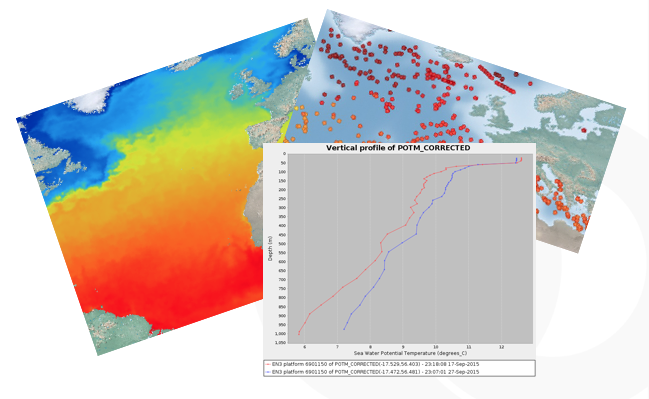
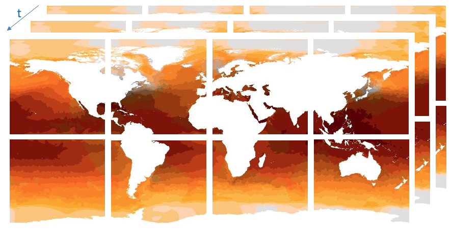

This Note describes CoverageJSON, a data format for describing "coverage" data in JavaScript Object Notation (JSON), and provides an overview of its design and capabilities. The primary intended purpose of the format is to enable data transfer between servers and web browsers, to support the development of interactive, data-driven web applications. "Coverage" data is a term that encompasses many kinds of data whose properties vary with space, time and other dimensions, including (but not limited to) satellite imagery, weather forecasts and river gauge measurements. We describe the motivation and objectives of the format, and provide a high-level overview of its structure and semantics. We compare CoverageJSON with other "coverage" formats and data models and provide links to tools and libraries that can help users to produce and consume data in this format. This Note does not attempt to describe the full CoverageJSON specification in detail: this is available at the project website.
This is expected to be the final release of this document by the Spatial Data on the Web Working Group.
For OGC This is a Public Draft of a document prepared by the Spatial Data on the Web Working Group (SDWWG) — a joint W3C-OGC project (see charter). The document is prepared following W3C conventions. The document is released at this time to solicit public comment.
The term "coverage" is defined in [[ISO19123]] as a "feature that acts as a function to return values from its range for any direct position within its spatial, temporal or spatiotemporal domain". In other words, a coverage maps points in space and time to data values. For example, an aerial photograph can be modelled as a coverage that maps positions on the ground to colours. A river gauge maps points in time to flow values. A weather forecast maps points in space and time to values of temperature, wind speed, humidity and so forth. The image below illustrates three different kinds of coverage: a gridded temperature field from a numerical simulation, a set of point measurements and a vertical profile.
Sometimes we see the word “coverage” used synonymously with “gridded data”, “raster data” or "imagery" but this isn’t really accurate. One can see from the above paragraph that non-gridded data (like a river gauge measurement) can also be modelled as coverages. Nevertheless, we often observe a bias toward gridded data in discussions (and software) that concern coverages.)
The [[ISO19123]] specification defines an abstract data model for representing the data and metadata needed to encode coverage data. This abstract model can be instantiated in many different concrete formats. The OGC Coverage Implementation Schema (CIS) specification ([[OGC-CIS]]) describes a concrete, directly instantiable data model and XML serialisation based on the Geography Markup Language (GML). Other serialisations have been defined, sometimes by retrospectively mapping existing binary data formats to the ISO19123 abstract data model (e.g. [[NetCDF]]). Version 1.1 of the CIS specification supports a JSON serialization, which is created through a direct translation from GML types to JSON objects. (We provide a brief comparison of CIS-JSON with CoverageJSON below.)
This document describes the CoverageJSON format and explains how it is well-suited to representation of spatial data on the Web: with a number of advantages for use in a web context, in comparison to alternative established approaches for serialisation of coverage data. It is a good match to the Use Case Requirements [[SDW-UCR]] and Best Practices [[SDW-BP]] of the Spatial Data on the Web working group. It has been informed also by the Data on the Web Best Practices [[DWBP]]."
Serialisations (i.e. data formats) based upon community-specific binary formats and complex XML schemas provide usability challenges for the development of web applications. Javascript libraries do not always exist for these formats, and the formats are complex, requiring specialist knowledge on the part of the web developer. Our overall aim is to make it easier for web developers to consume coverage data in their applications, minimising the need for prior knowledge about community-specific data formats.
Therefore our objective in this work was to develop a well-structured, consistent and easy-to-use JSON format for coverage data that fulfils the following criteria:
The full specification for CoverageJSON is published on GitHub, which also records all discussions that led to the design decisions in the format. The specification is split up into two documents: the core part, and a set of optional domain types that ease interoperability.
In CoverageJSON, a Coverage consists of the following objects:
A sample skeleton document encoding a three-dimensional gridded Coverage with two Parameters (sea surface temperature and sea ice area fraction) is shown here:
{
"type" : "Coverage",
"domain" : {
"type": "Domain",
"domainType" : "Grid",
"axes" : {
"x" : { /* Coordinate values */ },
"y" : { },
"t" : { }
},
"referencing" : [
/* Coordinate referencing information */
]
},
"parameters" : {
"SST" : { /* Description of temperature values */ },
"sea_ice" : { ... }
},
"ranges" : {
"SST" : { /* Encoding of temperature values, or link(s) */ },
"sea_ice" : { ... }
}
}
A Domain is a collection of named orthogonal axes containing coordinate values, coupled with information about how to reference these values to one or more real-world coordinate reference systems. An axis can contain simple numeric values like latitudes or longitudes but can also contain composite values like tuples or polygons.
The following is a complete example of a simple grid domain with longitude, latitude, and time axes, using the WGS84 longitude-latitude coordinate reference system and the Gregorian calendar:
{
"type" : "Domain",
"domainType" : "Grid",
"axes": {
"x" : { "start": -179.5, "stop": 179.5, "num": 360 },
"y" : { "start": 89.5, "stop": -89.5, "num": 180 },
"t" : { "values": ["2001", "2002", "2003"] }
},
"referencing": [{
"coordinates": ["x","y"],
"system": {
"type": "GeographicCRS",
"id": "http://www.opengis.net/def/crs/OGC/1.3/CRS84"
}
}, {
"coordinates": ["t"],
"system": {
"type": "TemporalRS",
"calendar": "Gregorian"
}
}]
}
Note that different CRSs can be associated with different combinations of axes, providing a very flexible model that allows complex data to be encoded without the need to create composite CRSs. Axis values can also be categorical in nature (instead of numeric), enabling data values to be associated with entities that are not spatiotemporal coordinates.
This closely mirrors the structure of the RDF Data Cube Vocabulary [[VOCAB-DATA-CUBE]], in which orthogonal dimensions are combined to form the domain of the data cube. (A "dimension" in the data cube corresponds with an "axis" in CoverageJSON.) Therefore, although a formal mapping process has yet to be performed, we expect that interoperability between the RDF Data Cube and CoverageJSON is achievable. Some RDF Data Cube dimensions may be categorical or enumerated types rather than potentially continuous dimensions. The RDF Data Cube specification does not explicitly support spatiotemporal dimensions, but this is addressed in the [[QB4ST]] extensions.
This mechanism allows for a huge variety of domain structures to be encoded, from multidimensional grids to one-dimensional trajectories through four-dimensional space. To ease the burden on clients, CoverageJSON allows an optional domain type property to be defined (see the example above). If the data provider specifies that the domain is of a known type, the client then knows in more detail what to expect when the domain is inspected. For example, if the domain type is "Grid", the client knows that the domain MUST have axes that are called "x" and "y" (corresponding to the two horizontal spatial dimensions) and MAY have axes called "z" and "t" (corresponding respectively to the vertical and temporal dimensions). A number of common domain types are specified and there is a mechanism for data providers to define and register their own types. Note that in a typical document, short names ("Grid", "PointSeries", "Trajectory", etc.) are used to indicate the domain type, but in fact these are full URIs in disguise - this becomes apparent when viewing CoverageJSON document as RDF using the JSON-LD context (see below).
Data in CoverageJSON is held in Range objects, which represent multi-dimensional arrays. There are two subtypes of Range objects:
shape property that defines how to "unwrap" the one-dimensional array into
a multi-dimensional one.Readers may wonder why multi-dimensional arrays are not encoded as nested arrays in CoverageJSON. Nested arrays
(i.e. "arrays of arrays") are harder to manipulate and reason over, since there is no guarantee that the inner arrays are of a consistent length.
With a one-dimensional array it is easy to verify that array.length matches the required number of elements, defined by the shape of
the domain and the numbers in the shape property.
In addition, Javascript engines can treat one-dimensional arrays more efficiently than nested arrays. APIs can be provided to extract slices in any
dimension as if the array were truly multi-dimensional. This mirrors the approach taken by libraries such as numpy.
Here is an example of an NdArray:
{
"type" : "NdArray",
"dataType": "float",
"axisNames": ["t", "y", "x"],
"shape": [1, 90, 90],
"values": [
12.2, 12.0, 13.3, ...
/* 8100 numbers (1*90*90) in row-major order */
]
}
For reasons of efficiency and convenience, data providers may prefer not to specify the range objects for all parameters inline in the same CoverageJSON document. In this case, there are two options:
The following illustrates how a coverage may be split up into a particular tileset:

{
"type" : "TiledNdArray",
"dataType": "float",
"axisNames": ["t", "y", "x"],
"shape": [3, 180, 360],
"tileSets": [{
"tileShape": [1, 90, 90],
"urlTemplate": "http://example.com/{t}/{y}/{x}.covjson"
}]
}
This is a 3 dimensional data set with dimensions (x, y, t) divided into two dimensional tiles for each t value: 4 along the X axis, 2 along the y axis and 3 along the t axis. Each tile is an NdArray, encoded as above.
Data values are described in CoverageJSON using Parameter objects. These contain a minimal set of metadata needed to do something useful with the data values: a definition of the quantity being recorded (e.g. relative humidity, potential temperature, reflectance) and the units of measure in which the data values are expressed.
The sample JSON document below shows a Parameter object describing the sea surface temperature variable from the above skeleton JSON.
"SST" : {
"type" : "Parameter",
"observedProperty" : {
"id" : "http://vocab.nerc.ac.uk/standard_name/sea_surface_temperature/",
"label" : {
"en" : "Sea Surface Temperature",
"de" : "Meeresoberflächentemperatur"
},
"description" : {
"en" : "The temperature of sea water near the surface",
"de" : "Die Temperatur des Meerwassers nahe der Oberfläche"
}
},
"unit" : {
"label" : {
"en" : "Degree Celsius",
"de" : "Grad Celsius"
},
"symbol": {
"value" : "Cel",
"type" : "http://www.opengis.net/def/uom/UCUM/"
}
}
}
Note that the main features of the Parameter metadata in this example are:
Other metadata, such as provenance information, is not part of the core CoverageJSON specification, but can be recorded via the extension mechanism.
A single CoverageJSON document can contain one of the following types of object:
The top-level object within a document contains a “type” property that identifies the type of the object that it contains. Documents may be linked to other documents; in this way data providers can ensure that each individual document is of a manageable size, with large datasets being partitioned among a number of linked documents. (See "Support for large datasets" above.)
To a limited extent, a CoverageJSON document can be converted into RDF through the use of a JSON-LD context header. The extent to which this is possible is discussed in [[COV-JSONLD-RDF]].
We did not consider that conversion to RDF should be a primary goal: we focused mainly on simplicity and readability of the format, under the assumption that few of the target users (web developers) would require a pure RDF representation of the data. Enabling a full conversion to RDF would require complicating the format (mainly for technical reasons including limitations of JSON-LD). Also, RDF is an unsuitable format for large arrays of data and so the Domain and Range would not convert efficiently.
Nevertheless, CoverageJSON makes frequent use of URIs to denote key concepts, such as units, observed properties, coordinate reference systems, domain types and links to other CoverageJSON documents. Clients can make use of these to detect these concepts unambiguously, whether or not they perform a translation to RDF.
By using the canonical CoverageJSON JSON-LD context, it is possible to convert the above Parameter directly into RDF triples:
_:SST <http://www.w3.org/1999/02/22-rdf-syntax-ns#type> <https://covjson.org/def/core#Parameter> . _:SST <http://qudt.org/schema/qudt#unit> _:SST_UNIT . _:SST_UNIT <http://qudt.org/schema/qudt#symbol> "Cel"^^<http://www.opengis.net/def/uom/UCUM/> . _:SST_UNIT <http://www.w3.org/2004/02/skos/core#prefLabel> "Degree Celsius"@en . _:SST_UNIT <http://www.w3.org/2004/02/skos/core#prefLabel> "Grad Celsius"@de . _:SST <http://www.w3.org/2005/Incubator/ssn/ssnx/ssn#observedProperty> <http://vocab.nerc.ac.uk/standard_name/sea_surface_temperature/> . <http://vocab.nerc.ac.uk/standard_name/sea_surface_temperature/> <http://purl.org/dc/terms/description> "Die Temperatur des Meerwassers nahe der Oberfläche"@de . <http://vocab.nerc.ac.uk/standard_name/sea_surface_temperature/> <http://purl.org/dc/terms/description> "The temperature of sea water near the surface"@en . <http://vocab.nerc.ac.uk/standard_name/sea_surface_temperature/> <http://www.w3.org/2004/02/skos/core#prefLabel> "Meeresoberflächentemperatur"@de . <http://vocab.nerc.ac.uk/standard_name/sea_surface_temperature/> <http://www.w3.org/2004/02/skos/core#prefLabel> "Sea Surface Temperature"@en .
An interesting area of future work would be to define two-way mappings between CoverageJSON and an RDF Data Cube representation (using the QB4ST extensions to the latter). As noted above, there are a number of similarities between the two representations, and defining such mappings should be possible.
CoverageJSON allows data providers to extend the format in a controlled manner to enable capabilities that are not supported by the core specification. The possible extensions that can be defined by users include:
In each case we recommend that URIs be used to denote these extensions (and to point to definitions), to avoid the possibility of clashes between extensions.
Complete examples of CoverageJSON documents can be found via the Playground. The same documents can be accessed directly on GitHub. These examples include Coverages, Coverage Collections and tiled Coverages.
We have developed a number of tools and libraries to help users produce, use and debug CoverageJSON documents. These are all published on the project website and include:
In this section we compare the data model of CoverageJSON with that of other formats that are used to carry coverage data.
[[NetCDF]] is a binary, platform-independent, domain-neutral data format for multidimensional data. Essentially, a NetCDF file is a collection of multidimensional arrays, plus metadata provided as key-value pairs. Metadata conventions are required to specialise NetCDF for particular communities. The Climate and Forecast conventions are the pre-eminent conventions for geospatial NetCDF data. NetCDF files that conform to these conventions are known as "CF-NetCDF files". Note that there are different varieties of the NetCDF format and data model. Here we are concerned with the "classic" NetCDF data model. The "enhanced" data model is not supported by the CF conventions and is much less widely used in practice.
The overall structure of CoverageJSON is quite close to that of [[NetCDF]], consisting essentially of a set of orthogonal domain axes that can be combined in different ways. One major difference is that in CoverageJSON, there is an explicit Domain object, whereas in NetCDF the domain is specified implicitly by linking data variables with coordinate variables. One consequence of this is that NetCDF files can contain several domains and hence several Coverages. A NetCDF file could therefore be converted to a single Coverage or a Coverage Collection in CoverageJSON.
The overall concepts of CoverageJSON are close to those of the [[ISO19123]] standard and the OGC standard Coverage Implementation Schema ([[OGC-CIS]]), which specialises ISO19123. The main points of difference are:
CoverageJSON can be used to record data that take the form of timeseries, for example measurements of flow rate in in a river, or average London rainfall over time. [[TimeseriesML]] specializes in recording such data and provides some features that are not provided in CoverageJSON. In TimeseriesML, richer metadata can be added to describe in more detail the data values being measured (the range) and their relationship to time (the domain). For example, a data value in the range may be defined to represent an accumulation, maximum, minimum, average or several other functions of a quantity over time, and the time values in the domain may be defined to mark the start, end or middle of the time period in question. In CoverageJSON, this level of description is not yet possible.
Version 1.0 of TimeseriesML (the current version at the time of writing) does not permit the association of multiple parameters with each data point, whereas this is permitted in CoverageJSON.
The Spatial Data on the Web Working Group has created a set of Use Cases and Requirements for spatial data on the Web. A subset of these requirements are relevant to Coverage data. This section describes how CoverageJSON addresses relevant requirements.
| Requirement | CoverageJSON approach |
|---|---|
| 4D model of space-time | Domains in CoverageJSON can have any number of dimensions. Many of the defined domain types support 4D domains, including grids and trajectories. |
| Compatibility with existing practices | CoverageJSON incorporates the same overall concepts (domain, range, and metadata) as other coverage data models (see [[OGC-CIS]]). It differs in some respects from this standard. |
| Compressibility | CoverageJSON consists of JSON objects, which can be compressed using standard approaches, for example by enabling gzip and the corresponding Content-Encoding in a web server. |
| Coverage temporal extent | CoverageJSON has a means to add temporal references. This is defined to make the common case easy, (using the Gregorian calendar) but also allows alternative temporal reference systems. |
| Crawlability | Like any other 'file' on the web, CoverageJSON objects can have a URL and so can be found by crawlers. To what extent an agent is able to interpret the contents of a CoverageJSON file is another question. Also important for crawling and hence discovery might be metadata associated with CoverageJSON data. |
| CRS definition | CoverageJSON defines an approach for specifying the CRS as a URI. |
| Determinable CRS | CoverageJSON enables domains to be referenced to one or more CRSs, either through URI links or inline definitions. |
| Different time models | CoverageJSON supports a range of temporal reference systems, defaulting to the Gregorian calendar. |
| Discoverability | CoverageJSON does not define how to include discovery metadata at the level of a CoverageJSON document. It is usually assumed that this metadata is contained elsewhere, e.g. in a catalogue. However, CoverageJSON does provide an extension mechanism for adding custom metadata to a document. This could be used to add discovery metadata, for example from the DCAT vocabulary [[DCAT]]. See this discussion. |
| Georectification | Coverage JSON has a flexible and extensible approach to specifying reference systems, in which data can be referenced to any grid. |
| Georeferenced spatial data | See the Georectification requirement above. |
| Linkability | CoverageJSON documents can contain links to external entities, including parameter definitions, CRS definitions or other CoverageJSON documents (see "Support for large datasets" above). CoverageJSON documents are intended to be published on the Web and can therefore be linked to. |
| Machine to machine | CoverageJSON is designed for machine processing, although is also somewhat human-readable. |
| Multilingual support | CoverageJSON supports multi-language labels |
| Observed property in coverage | The observed property is defined in CoverageJSON as Parameter objects. |
| Provenance | CoverageJSON is intended primarily to describe the result of a procedure and does not provide a specific mechanism to describe the provenance or the procedure itself. The extension mechanism could be used to include relevant properties. |
| Quality per sample | Quality information can be incorporated as additional parameters of a coverage. For example, quality flags can be encoded as categorical parameters, and numerical errors can be described as continuous parameters. Parameter Group objects provide a mechanism to associate parameters with each other to provide internal links between data values and their associated quality information. |
| Reference data chunks | There are two main approaches in CoverageJSON to dividing a large coverage into chunks.
|
| Sensing procedure | As with "Provenance" above, CoverageJSON focuses on the results of the procedure, not the procedure itself. The text description of a parameter could potentially contain a description of the sensing method, or the extension mechanism could be used. |
| Spatial vagueness | It is possible to record spatially-vague data (i.e. data that is not associated with precise spatial coordinate values) in CoverageJSON. For example, a domain axis could be defined that records locations as identifiers, rather than numeric coordinates (e.g. "['London', 'New York', 'Paris']"). |
| SSN-like representation | CoverageJSON does not attempt to provide a method to describe sensors (or any other provenance information, see above). However, CoverageJSON reuses the "observedProperty" property from SSN (https://www.w3.org/2005/Incubator/ssn/ssnx/ssn#observedProperty). Usage of this can be seen in "CoverageJSON, JSON-LD and RDF" above. The extension mechanism could be used to provide more information if required. |
| Support for 3D | CoverageJSON fully supports 3D data: see "4D model of space-time" above. |
| Support for tiling | CoverageJSON supports tiling. (This mechanism is probably more suited to raster than vector data.) |
| Use in Computational Models | CoverageJSON is a machine-readable format that can be both read by, and written by, computational models. However, it is primarily intended as a format for data exchange over wide-area networks, not an archive format. Therefore it is probably unlikely that the designer of a computational model would choose to read or write data in CoverageJSON directly. Tools to convert to and from NetCDF (a more common archive format) are under development. |
The Spatial Data on the Web Working Group has created a set of Best Practices for spatial data on the Web [[SDW-BP]]. A subset of these Best Practices are relevant to Coverage data. This section lists the Best Practices and describes how or whether CoverageJSON relates to each.
| Best Practice | CoverageJSON approach |
|---|---|
| Best Practice 1: Use globally unique persistent HTTP URIs for Spatial Things | A coverage may itself be considered as a Spatial Thing, and its corresponding CoverageJSON document can be identified by an HTTP URI. This URI may be used in a CoverageCollection, or indeed any other document, such as a [[DCAT]] catalog./td> |
| Best Practice 2: Make your spatial data indexable by search engines | This is largely outside the scope of CoverageJSON, and is more likely to be relevant when publishing data catalogs, rather than individual Coverages. |
| Best Practice 3: Link resources together to create the Web of data | Coverages, and parts of coverages, are assigned URIs and can be linked to. URIs are used in the definition of coordinate reference systems and to point to definitions of observed properties and units. |
| Best Practice 4: Use spatial data encodings that match your target audience | CoverageJSON has a particular target audience in mind: web developers who like working with JSON representations of data, a group that is often unfamiliar with the more established OGC approaches to coverage data. Therefore CoverageJSON is a good solution when that group is the target audience. |
| Best Practice 5: Provide geometries on the Web in a usable way | CoverageJSON reuses [[GeoJSON]]'s syntax for encoding geometries, which is widely used and understood. |
| Best Practice 6: Provide geometries at the right level of accuracy, precision, and size | CoverageJSON does not provide a means to specify the accuracy or precision of coordinate values. However, when publishing geometries the publisher can decide how many points are needed to adequately describe the geometry. |
| Best Practice 7: Choose coordinate reference systems to suit your user's applications | The coordinate reference system used is specified in the domain of the coverage: so the most important CRS can be used to suit the application. |
| Best Practice 8: State how coordinate values are encoded | CoverageJSON has a clear specification of how coordinate values are encoded. |
| Best Practice 9: Describe relative positioning | CoverageJSON enables CRSs to be specified in a range of ways, many of which (e.g. identifier-based systems) could support relative positioning. |
| Best Practice 10: Use appropriate relation types to link Spatial Things | This Best Practice is outside of the scope of CoverageJSON. |
| Best Practice 11: Provide information on the changing nature of spatial things | Most aspects of this Best Practice are outside of the scope of CoverageJSON, except in the sense that coverages are well suited to describing spatially referenced properties that change over time. |
| Best Practice 12: Expose spatial data through 'convenience APIs' | CoverageJSON is designed to make coverage data available in a form suitable for processing by Javascript in web pages (as well as other possible applications). It can return entire coverage files, or smaller parts (tiles) of coverages as required. The choice of API is, however, outside the scope of CoverageJSON. |
| Best Practice 13: Include spatial metadata in dataset metadata | The domain of a CoverageJSON object contains machine readable specifications of the area (and time) covered by the dataset, as well as the coordinate reference system used. CoverageJSON provides an extensibility mechanism allowing arbitrary additional metadata items to be added. |
| Best Practice 14: Describe the positional accuracy of spatial data | The positional accuracy and precision of coverage data depends in a complex way on the method by which the data was collected. CoverageJSON itself does not incorporate detailed provenance metadata, though provides the possibility to link to external documentation or specifications of data collection methods and associated accuracy considerations. |